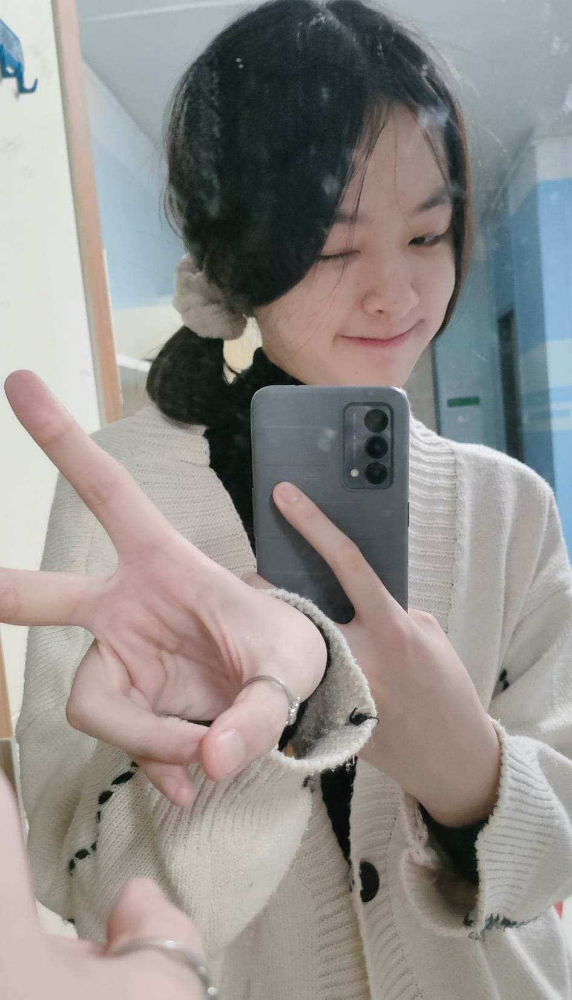
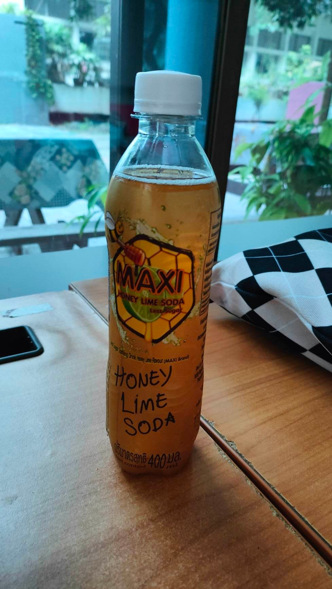
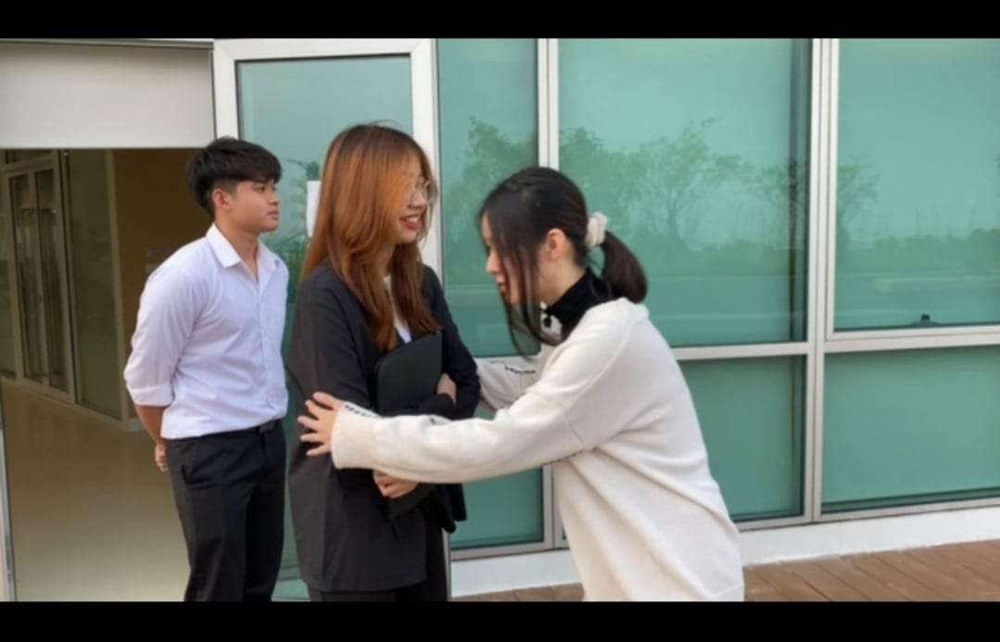
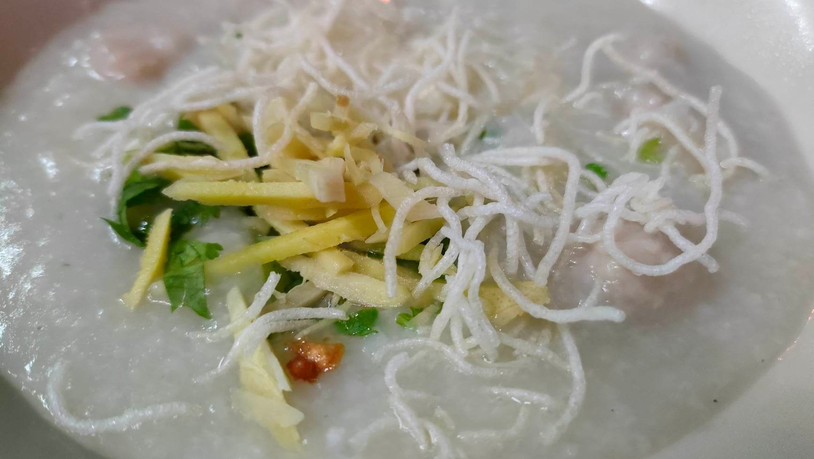
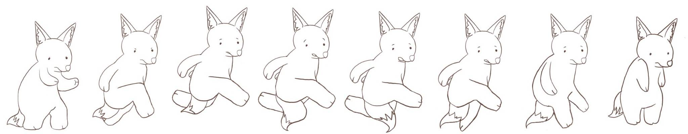

วันที่ 22 พฤศจิกายน 2022 🌓

วันนี้พลอยได้แสดงบทละครอังกฤษแล้ว พลอยค่อนข้างตื่นเต้น เพราะเป็นครั้งแรกเลยที่ได้แสดงละครโดยเล่นเป็นตัวหลัก แถมยังต้องเข้าถึงบทบาทด้วย
ก็แอบกลัวว่าตัวเองจะทำได้ไม่ดี แต่คิดไปก็ไม่ได้อะไรนอกจากเชื่อในสิ่งที่ทำอยู่ และเชื่อในสิ่งที่ซ้อมมา !
เพื่อนซื้อน้ำมาฝากให้หายคอแห้งกันด้วย~

สุดท้ายซีนแรกก็ผ่านไปด้วยดี ไม่ค่อยนานมาก ถือว่าทำออกมาได้ดี ขอบคุณทุกคนมากจริง ๆ ! สิ่งนี้คือภาพที่เพื่อน และพลอยงงบทกันค่ะ พลอยเลยเข้าไปขอโทษเพื่อนเพราะนึกว่าตัวเองแสดงผิด 555
วันนี้พลอยกินข้าวง่าย ๆ แบบโจ๊กที่หน้ามอ

ตอนแรกกะว่าจะไปลองใช้คอมที่ www.time แต่ลืมไปว่าคอมชั้น1 ของตึกคณะยังมีเหลืออยู่ จากที่ตอนแรกใช้คอมห้องอื่นแต่โดนยกไปจัดงาน ICT Challenge ก็เลยเดินกลับไปทำงานเว็บเทค แต่วันนี้ไม่ได้อะไรเลยนอกจากบัค ก็เลยเฟลในตัวเองหนักมาก แล้วก็เริ่มท้อแล้ว.. แต่ยังไงก็ต้องสู้ต่อนั่นแหละนะ ถ้าแค่นี้ทำไม่ได้ จะไปทำงานไอทีต่อได้ยังไงกัน !
กลับมาก็วาด SpriteSheet HelloWorld ต่อด้วยค่ะ ง่วงมาก ๆ ๆ
